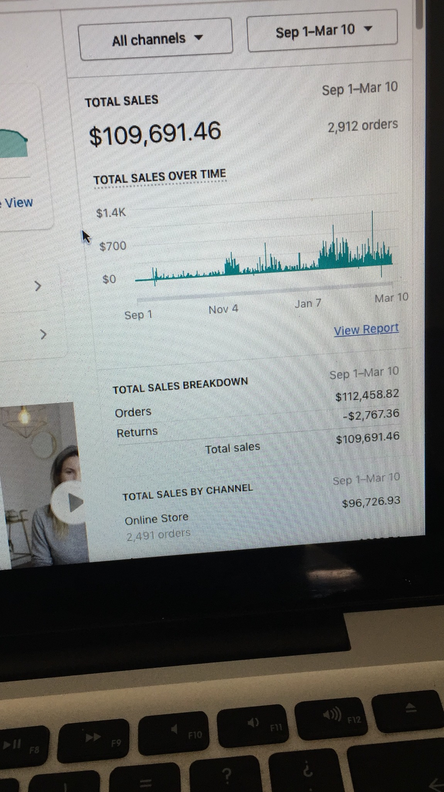
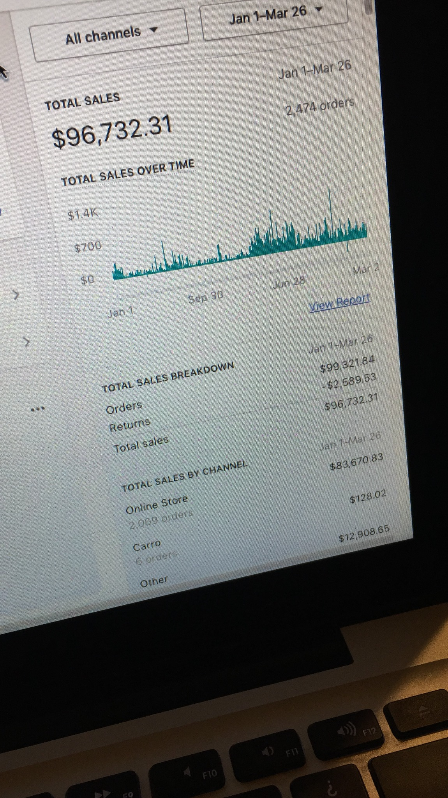
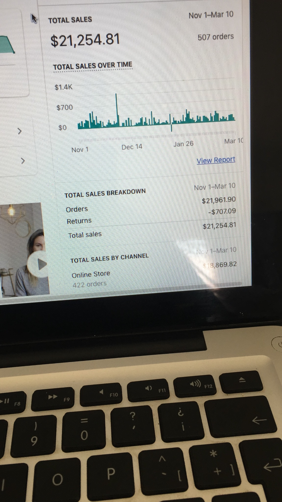

Cartographier
Lire le parcours de la campagne à la boutique et à la commande.
Un portfolio de quatre boutiques Etsy et Shopify, plus de 200 000 $ de revenus rapportés et une hausse rapportée de 34 % du panier moyen. Le travail relie acquisition, expérience boutique et réachat.
Réserver un rendez-vous ↗ Etsy & Shopify
Etsy & ShopifyRevenus rapportés du portfolio
Une boutique doit faire plus qu’attirer un clic. L’offre, les informations produit et le paiement façonnent la commande, tandis que la communication client influence la suite. Ce portfolio relie ces questions sur Etsy et Shopify.
Où perd-on de la croissance entre la première visite et le prochain achat ? Acheter du trafic ne suffit pas. Conversion, panier moyen, coût d’acquisition et réachat changent le sens commercial d’une campagne.
Relier acquisition payante et Google Shopping aux analyses de boutique, au panier moyen et au marketing de fidélisation. La vision de quatre boutiques garde l’attention sur le parcours complet plutôt que sur une seule mesure publicitaire.
Une carte du travail, du premier message à la valeur client.
Atteindre le bon acheteur
Clarifier l’offre
Réduire l’hésitation
Créer un panier utile
Gagner le prochain achat
Chaque étape doit avoir un objectif clair. Voici comment les priorités se relient à la question métier.
| Priorité | Travail à mener | Signal à examiner |
|---|---|---|
| Acquisition et Shopping | Relier le trafic et Google Shopping aux produits et offres recherchés. | La campagne attire-t-elle des visiteurs commercialement pertinents ? |
| Expérience boutique | Examiner le parcours du produit au paiement et les questions du client. | Quelle étape crée de l’hésitation ? |
| Panier moyen | Lire le panier avec l’offre et les raisons d’acheter. | Le panier améliore-t-il l’économie sans perdre en clarté ? |
| Fidélisation et analyse | Relier les commandes et les comportements à la prochaine décision marketing. | Qu’ajoutent le réachat, la marge et le coût d’acquisition ? |
Les questions de mesure ci-dessous expliquent comment j’évalue le travail ; ce ne sont pas de nouveaux résultats publiés.
Lire le parcours de la campagne à la boutique et à la commande.
Choisir le frein à traiter : acquisition, conversion ou valeur.
Rassembler les décisions publicitaires, boutique et fidélisation.
Lire les revenus avec les coûts et la qualité client.
Les revenus et le panier ci-dessous sont rapportés dans le portfolio fourni. Les photos originales montrent des vues complémentaires, avec les totaux et périodes affichés conservés.
| Période affichée | Ventes totales affichées | Commandes affichées |
|---|---|---|
| Sep 1 – Mar 10 | $109,691.46 | 2,912 |
| Jan 1 – Mar 26 | $96,732.31 | 2,474 |
| May 3 – Mar 10 | $56,065.64 | 1,403 |
| Nov 1 – Mar 10 | $21,254.81 | 507 |
Vues originales des rapports. Les périodes peuvent se chevaucher ; les totaux ne sont pas additionnés ni présentés comme une seule courbe de croissance.
Quelques images de mon travail e-commerce. Ouvrez une image pour examiner le rapport original.

Voir l’original
Voir l’original Voir l’original
Voir l’original
Voir l’originalChaque image présente sa propre vue de rapport. Les périodes peuvent se chevaucher ; ces montants ne sont pas additionnés.
La publicité porte une promesse. La page et le paiement doivent permettre de l’évaluer facilement.
Le panier moyen mérite sa place auprès du coût d’acquisition et de la conversion dans les décisions de croissance.
Chaque vue possède sa période et ses définitions. Les comprendre est plus utile que les additionner.

J’aime comprendre l’offre, le client et les décisions derrière les chiffres. Les campagnes deviennent plus utiles lorsqu’elles sont reliées à l’expérience produit et à la réalité commerciale.
Réserver un rendez-vous ↗Envoyez-moi votre produit, les canaux utilisés et le résultat que vous souhaitez améliorer. Je préfère comprendre le blocage avant de proposer une formule.
Réserver un rendez-vous ↗